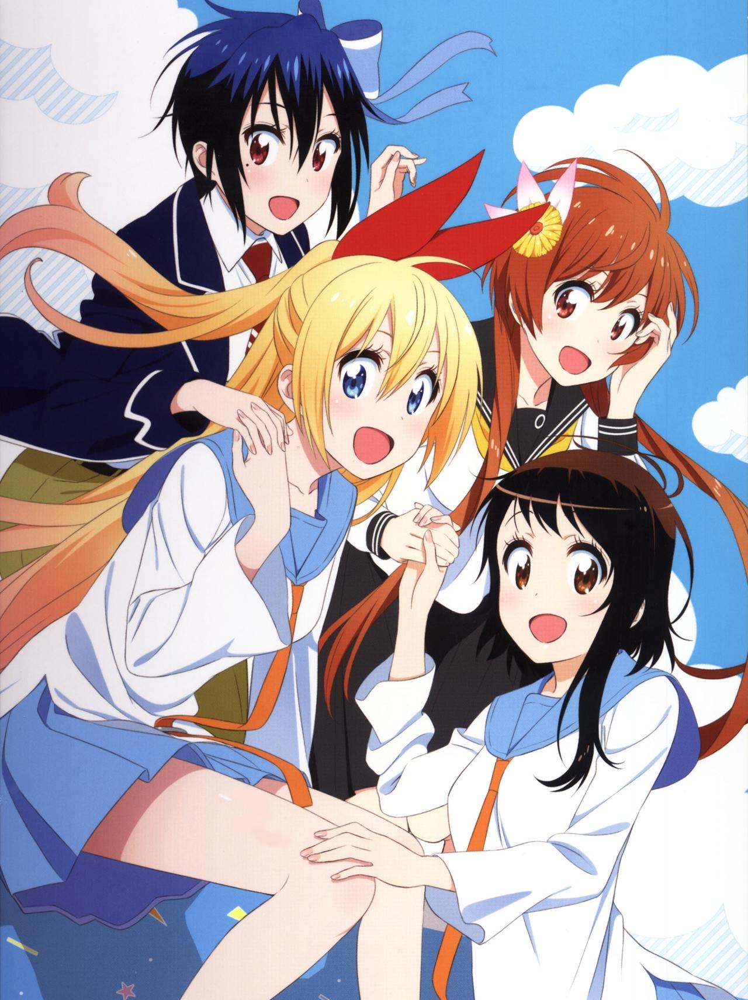

El autor de Nisekoi publicará un nuevo one-shot en agosto
El leaker japonés Ryokutya informó que Naoshi Komi, autor de la popular comedia romántica Nisekoi, publicará un nuevo one-shot en la revista Jump GIGA SUMMER 2022, programada para el próximo 5 de agosto en Japón. Si bien solo se trata de un one-shot (una historia contada en un solo capítulo), esto marca el regreso del autor después de un año de inactividad.
Komi lanzó el one-shot One Piece: Vivi no Bouken en agosto de 2021, y tres años antes lanzó otros dos one-shots titulados Nisekoi Bangai-hen y E no Gente. Sin embargo, su manga serializado más reciente no ha dejado de ser Nisekoi, que finalizó hace seis años.
Por otra parte, Naoshi Komi publicó el manga Nisekoi a través de la revista Weekly Shonen Jump de la editorial Shueisha entre noviembre de 2011 y agosto de 2016, con un total de veinticinco volúmenes recopilatorios. La obra inspiró dos temporadas de una adaptación al anime producida por los estudios SHAFT, con la primera emitida en enero de 2014 y contando con un total de veinte episodios. La segunda temporada contó con doce episodios y se estrenó en abril de 2015. Nunca volvió a haber indicios sobre producir una continuación.
Sinopsis de Nisekoi
PRaku Ichijou, un estudiante de primer año en Bonyari High School, es el único heredero de una intimidante familia yakuza. Hace diez años, Raku le hizo una promesa a su amiga de la infancia. Ahora, todo lo que tiene que seguir es un colgante con cerradura, que solo se puede abrir con la llave que la chica se llevó cuando se separaron. Ahora, años después, Raku se ha convertido en un adolescente típico, y todo lo que quiere es permanecer lo más alejado posible de sus antecedentes de yakuza mientras pasa sus días escolares junto a su interés amoroso de la escuela secundaria, Kosaki Onodera.
Sin embargo, cuando la banda estadounidense Bee Hive invade el territorio de su familia, los idílicos sueños románticos de Raku se ponen a prueba mientras se ve arrastrado a un conflicto frustrante: Raku pretende fingir que está en una relación romántica con Chitoge Kirisaki, la hermosa hija de el jefe de la colmena de abejas, a fin de reducir la fricción entre los dos grupos. Desafortunadamente, la realidad no podría estar más lejos de esta enorme mentira: Raku y Chitoge se odian a primera vista, ya que la chica está convencida de que es un patético pusilánime y, a los ojos de Raku, Chitoge es tan atractiva como un gorila salvaje.